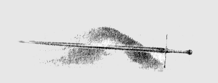

13
Sonra Túrin Sirion’a doğru indi, kararsızdı. Çünkü, daha önce iki acı seçeneği varmış gibi görünürken, şimdi üç tane vardı ve ıstıraplarına yenilerini kattığı, zulüm gören halkı onu çağırıyordu. Tek bir tesellisi vardı: Morwen ile Niënor’un uzun zaman önce Doriath’a gittiği kesindi ve yolları ancak Nargothrond’un Kara Kılıç’ının cesareti sayesinde güvenli olmuştu. Ve içten içe, kendine şöyle dedi: “Daha erken gelseydim bile, onları emanet edecek daha iyi yer bulabilir miydim? Melian Kuşağı kırılırsa, her şeyin sonu gelir. Hayır, böylesi daha iyi; çünkü benim gazabım ve düşüncesiz hareketlerim, yaşadığım her yere gölge düşürüyor. Bırak Melian barındırsın onları! Bir süre daha onlara gölge etmeyip, huzur içinde bırakacağım.”
Túrin Finduilas'ı aramak için çok geç kalmıştı, ama bir hayvan kadar vahşi ve ihtiyatlı bir biçimde Ered Wethrin'in eteklerindeki ormanları dolaştı; kuzeye, Sirion Geçidi'ne giden bütün yollarda pusu kurdu. Çok geçti. Çünkü yağmurlar ve karlar bütün izleri silmişti. Ama böylece Túrin Teiglin'i geçerek, Brethil Ormanı'nda Haleth'in halkına rastladı. Savaş yüzünden sayıca azalmış, küçük bir halk olmuşlardı ve çoğunlukla gizlilik içinde, ormanın derinliklerinde, Amon Obel'in üzerindeki, kazıklı çitlerle çevrili bir yerde yaşıyorlardı. Yaşadıkları yere Ephel Brandir demişlerdi; çünkü artık beyleri, öldürülen Handir'in oğlu Brandir'di. Ve Brandir savaş adamı değildi, çocukluğunda yaşadığı bir talihsizlik eseri bacağı sakatlanmışti; ve ayrıca yumuşak bir mizacı vardı, metalden çok ahşabı severdi ve başka ilimlerden çok toprakta yetişen şeyleri bilirdi.
Ama ormancıların bazıları hâlâ sınırlarında ork avlıyorlardı; ve bu yüzden Túrin oraya vardığında çatışma sesleri duydu. O tarafa seyirtti ve ihtiyatla ağaçların arasından çıktığında, küçük bir insan grubunun orklar tarafından kuşatıldığını gördü. İnsanlar sırtlarını bir açıklıktaki seyrek ağaçlara vermişler, çaresizce kendilerini savunuyorlardı ve yardım gelmezse kaçma umutları pek azdı. Bu yüzden, Túrin, ağaçların altından kendini göstermeden, ayaklarını yere vurarak büyük patırtılar çıkardı ve sonra, pek çok adama önderlik edermiş gibi, yüksek sesle bağırdı: "Ha! İşte onları bulduk! Hepiniz peşimden gelin! Hemen gidin ve öldürün!"
Bunun üzerine orklar dehşet içinde çevrelerine bakındılar ve sonra Túrin, arkasındaki adamlara el edermiş gibi yaparak dışarıya sıçradı ve elindeki Gurthang'ın kenarları alev gibi ışıldadı. Orklar bu kılıcı çok iyi tanıyordu ve daha Túrin aralarına dalmadan çoğu dağılıp kaçtı. Sonra ormancılar da ona katıldı ve birlikte düşmanlarını ırmağa kadar kovaladılar: pek azı ırmağı geçebildi. Sonunda kıyıda durdular ve ormancıların önderi Dorlas şöyle dedi: "Avda hızlısın, beyim; ama adamların takip edemeyecek kadar yavaş."
"Hayır," dedi Túrin, "biz hep birlikte, tek adam gibi koşarız ve asla ayrılmayız."
Bunun üzerine Brethil insanları güldüler ve şöyle dediler: "Eh, bir tanesi çok adama bedel. Ve sana büyük şükran borçluyuz. Ama sen kimsin ve burada ne işin var?"
"İşimi yapıyorum yalnızca ve işim ork öldürmek," dedi Túrin. "Ve işim beni nereye götürürse orada yaşarım. Ben Ormanların Vahşi Adamı'yım."
"O zaman gel ve bizimle yaşa," dediler."Çünkü biz ormanda yaşıyoruz ve bu tür zanaatkarlara ihtiyacımız var. Gelmene memnun oluruz!"
Bunun üzerine Túrin onlara tuhaf tuhaf baktı ve şöyle dedi: "Yani, kapılarını karartmama tahammül edecek olanlar kaldı mı? Ama, dostlarım, benim acı bir işim var: Nargothrondlu Orodreth'in kızı Finduilas'ı bulmak, ya da en azından ondan haber almak. Heyhat! Nargothrond'dan götürüleli çok zaman oldu, ama yine de onu aramaya gitmeliyim."
Bunun üzerine ona acıyarak baktılar ve Dorlas şöyle dedi: "Daha fazla arama. Çünkü Nargothrond'dan yukarı, Teiglin Geçitlerine doğru bir ork ordusu geldi ve gelişlerini epey önceden öğrenmiştik: getirdikleri tutsakların sayısı yüzünden çok ağır hareket ediyorlardı. Sonra, savaşa küçük bir katkıda bulunalım dedim ve tutsakların bazılarını kurtarmayı umut ederek, toplayabildiğimiz bütün okçularla orklara pusu kurduk. Ama heyhat! Saldırıya uğrar uğramaz pis orklar ilk önce tutsakların arasındaki kadınları öldürdüler; ve Orodreth'in kızını bir mızrakla ağaca mıhladılar."
Túrin, ölümcül yara almış biri gibi kalakaldı. "Bunu nereden biliyorsun?" dedi.
"Çünkü ölmeden önce benimle konuştu," dedi Dorlas. "Beklediği birini ararmış gibi göz gezdirdi üzerimizde ve şöyle dedi: 'Mormegil. Mormegil'e Finduilas'ın burada olduğunu söyle.' Daha fazla konuşmadı. Ama son sözleri yüzünden, onu öldüğü yere gömdük. Teiglin'in yanında, bir mezarda yatıyor. Evet, bir ay oldu."
"Beni oraya götürün," dedi Túrin; ve onu Teiglin Geçitlerindeki bir tepeciğe götürdüler. Orada Túrin yere uzandı ve üzerine bir karanlık çöktü, bu yüzden onun öldüğünü sandılar. Ama Dorlas yattığı yerde baktı ona ve sonra adamlarına döndü ve şöyle dedi: "Çok geç! Yürekler acısı bir tesadüf bu. Ama bakın: bizzat Mormegil, Nargothrond'un büyük kumandanı burada yatıyor. Orklar gibi, kılıcına bakarak tanımalıydık onu." Çünkü Güney'in Kara Kılıcı'nın ünü dört bir yanda duyulmuştu, ormanın derinliklerine kadar gelmişti.
Bu yüzden onu saygıyla kaldırdılar ve Ephel Brandir'e taşıdılar; ve onları karşılamaya gelen Brandir taşıdıkları cesede şaştı. Sonra örtüyü açarak Húrin oğlu Túrin'in yüzüne baktı; ve yüreğine karanlık bir gölge çöktü. "Ey Haleth'in zalim insanları!" diye haykırdı. "Neden bu adamı ölümden korudunuz? Büyük zahmetle, buraya halkımızın son belasını getirdiniz."
Ama ormancılar şöyle dedi: "Hayır, bu Nargothrond'dan Mormegil, kudretli bir ork katili; ve yaşıyorsa, bize büyük yardımı dokunacak. Hem, öyle olmasa bile, kedere boğulmuş bir adamı leş diye yol kenarına mı bırakmalıydık?"
"Gerçekten de bırakamazdınız," dedi Brandir. "Kader öyle olmamasını istedi." Ve Túrin'i evine aldı, ona özenle baktı.
Ama sonunda Túrin karanlığı üzerinden silkelediğinde, bahar dönüyordu ve Túrin uyandığı zaman yeşil tomurcuklara vuran güneşi gördü. Bunun üzerine, Hador Evi'nin cesareti onun içinde de uyandı ve kalkıp, içten içe şöyle dedi: "Bütün yaptıklarım ve geçmiş günlerim karanlık ve şer doluydu. Ama yeni bir gün doğdu. Burada huzur içinde yaşayacak, ismimden ve soyumdan vazgeçeceğim; ve böylece, gölgemi geride bırakacağım, ya da en azından onu sevdiklerime bulaştırmayacağım."
Böylece yeni bir isim aldı ve kendine Turambar dedi, ki Yüksek Elf lisanında Kaderin Efendisi anlamına gelir; ve ormancıların arasında yaşadı ve onlar tarafından sevildi ve onlardan eski ismini unutmalarını, onu Brethil'de doğmuş biri saymalarını rica etti. Ama, ismini değiştirerek mizacını da tamamen değiştiremezdi, Morgoth'un hizmetkarlarının karşısında, yaşadığı eski acılarını da unutamazdı; ve bu iş Brandir'i memnun etmese de, onunla aynı kafada olan birkaç kişi ile birlikte ork avlamaya çıkar oldu. Çünkü Brandir halkını sessizlik ve gizlilik sayesinde korumayı umuyordu.
"Artık Mormegil yok," dedi, "ama dikkatli ol, yoksa Turambar'ın yiğitliği Brethil'e de benzer bir intikam getirecek!"
Bu yüzden Turambar kara kılıcını bir kenara bıraktı ve bir daha savaşa götürmedi ve daha çok yay ve mızrak kullandı. Ama orkların Teiglin Geçitlerini kullanmasına ya da Finduilas'ın mezarına yaklaşmasına da izin vermedi. Mezara, Haudh-en-Elleth yani Elf-kızı'nın Tümseği adı verilmişti; ve kısa zamanda orklar o mekandan korkmayı, oradan kaçınmayı öğrendiler. Ve Dorlas, Turambar'a şöyle dedi: "İsminden vazgeçtin, ama hâlâ Kara Kılıç'sın; hem, onun Dor-lóminli Húrin'in oğlu, Hador Evi'nin beyi olduğunu söyleyen söylentiler doğru değil mi?"
Túrin şöyle yanıt verdi: "Ben de öyle işittim. Ama dostum olarak sana yalvarırım, kimseye duyurma."
